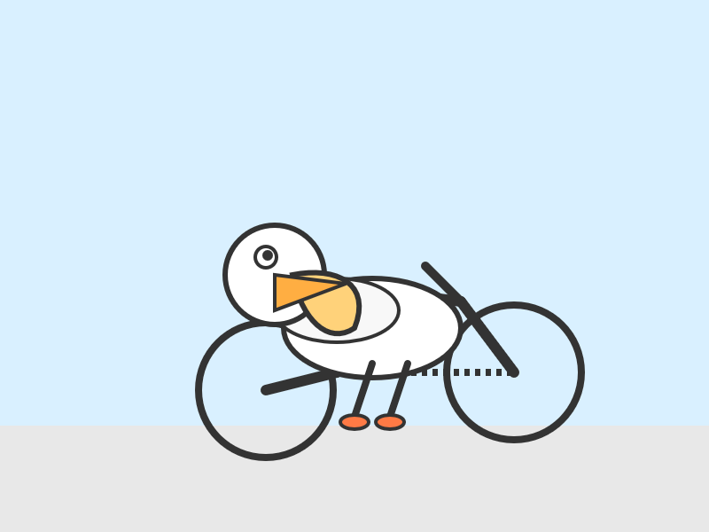
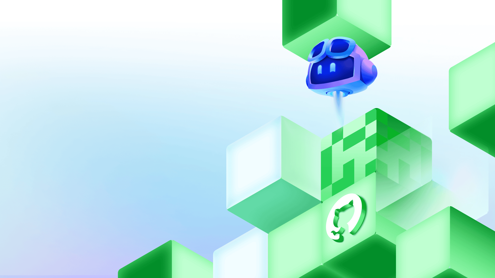
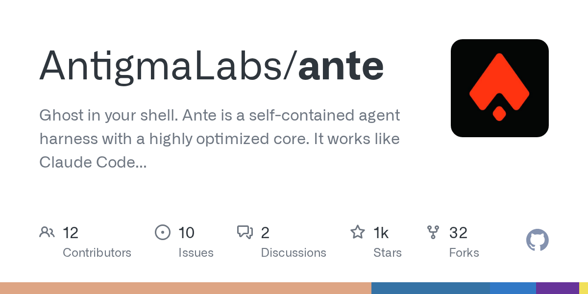
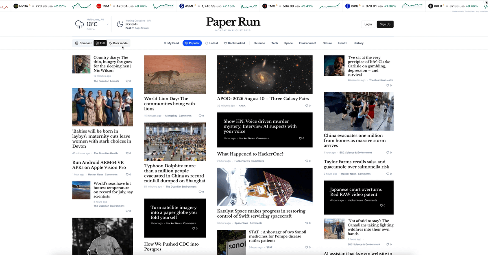
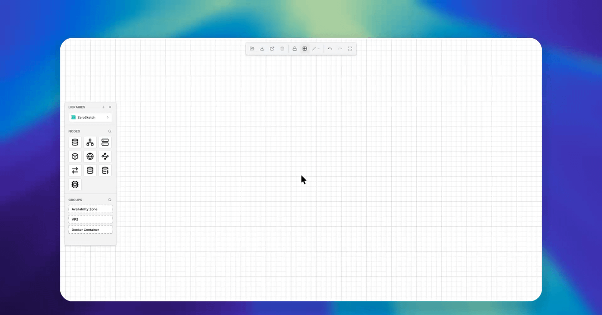
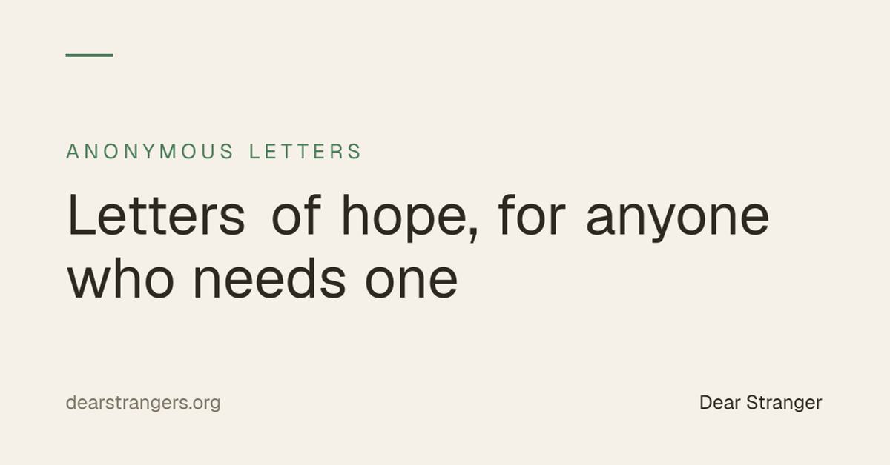

🔥 Top 3 (must read)
Auto mode is now the default in Claude Code
Claude Code now runs in auto mode by default, so the agent picks how it works without you switching modes by hand. The HN thread (304 comments) shows strong opinions on both sides about giving the agent more control. You use Claude Code daily and lead a team that does too — check how this changes your permission and review habits before the team gets surprised. (discussion)

Introducing Muse Glimmer
Meta released Muse Glimmer, a 30B open-weights model under a clean Apache 2.0 license, tuned for end-to-end agentic task completion. Simon Willison notes it targets exactly what people want from a local model. A capable local agentic model is a real option for offline coding tools and for teams that cannot send code to an API.

Show HN: Needle2 — a 14MB agentic LLM for phones, wearables, smart home and robots
A tiny agentic model built to run on-device on phones and small hardware. For a Flutter developer this is worth a look: on-device AI features with no server, no latency, and no per-token cost. (discussion)

🤖 AI for developers
Using the GitHub Copilot SDK for Java
GitHub shows how to drive Copilot from code (annotations, virtual threads). It's Java, but the pattern matters: Copilot as an SDK you embed in your own tools, not just an editor plugin. Watch for the same pattern in Node.js.

👔 Engineering & teams
Nothing strong today beyond the Claude Code auto-mode change above, which is also a team-process question: what your team lets agents do by default.
🎯 For me
The Claude Code auto-mode default is the direct hit today — it changes a tool you and your team use every day.
Needle2 (Top 3) is the mobile angle: small on-device models are getting good enough to ship inside a Flutter app.
💡 App ideas & indie builds
Ante — a coding agent in a single binary that runs offline
An offline coding agent with zero setup: one binary, no cloud. The user problem: devs who can't (or won't) send code to an API still want agent help. Pairs well with local models like Muse Glimmer; a good study in "make the tool radically simple to adopt." (discussion)

A news aggregator for nerds
A dev built their own tech-news aggregator because existing feeds didn't fit them. The problem — "generic feeds waste my time" — is the same one behind your own daily-report project; worth comparing how they solved curation.

Zero-bloat open source system design and diagramming tool
An architecture diagramming tool with no accounts and no bloat. The problem: most diagram tools are heavy SaaS when devs just want to sketch a system fast. Useful for design reviews with your team, and a nice example of winning by removing features.

Reddlist — find promo-friendly subreddits and draft your posts
A curated database of subreddits where promo posts survive, plus free done-for-you posts to build case studies. The problem: indie devs get shadowbanned when they market on Reddit. The "do it manually for free first to prove value" launch tactic is the takeaway.
Dear Stranger — anonymous letters to strangers
Write an anonymous letter; a stranger who needs it finds it. No accounts, no likes, no ads. A reminder that an app can be one small human interaction done well, not a platform.

🎓 Try this
Download Ante and run a coding agent fully offline. It's a single binary, so the test costs you ten minutes — and it shows how far local agents have come compared to Claude Code on the same task.